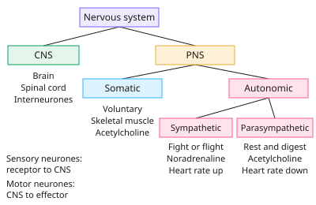

A-level Biology Year 13 · Topic 9
The nervous system, brain and sensory perception
The nervous system, brain and sensory perception takes you inside the most complex organ in the body.
We will look at how the nervous system is organised, the structure and functions of the brain, and how scientists image it with CT, MRI, fMRI and PET.
Then we see how rods and cones detect light, and how the medulla controls breathing rate.
- 5 subtopics
- 221 questions
- Free: 9.1 notes and 10 questions
In this topic
- 9.1Organisation of the nervous system: CNS, PNS, somatic and autonomic divisionsFree below · 45 questions
- 9.2Structure and functions of the human brainOpen in Full Marks · 35 questions
- 9.3Brain imaging techniques: CT, MRI, fMRI and PETOpen in Full Marks · 33 questions
- 9.4Photoreceptors: rod and cone cells and the retinaOpen in Full Marks · 79 questions
- 9.5Control of breathing rate by the medullaOpen in Full Marks · 29 questions
9.1 · Free notes
Organisation of the nervous system: CNS, PNS, somatic and autonomic divisions

Key points
- The nervous system has two parts. The central nervous system (CNS) is the brain and spinal cord. The peripheral nervous system (PNS) is all the neurones outside the CNS, carrying impulses to and from it.
- In the PNS, sensory (afferent) neurones carry impulses from receptors to the CNS. Motor (efferent) neurones carry impulses from the CNS to effectors (muscles and glands).
- The motor part of the PNS has two divisions. The somatic nervous system is under voluntary control. The autonomic nervous system is involuntary (unconscious).
- Somatic pathways use a single motor neurone from the CNS to skeletal muscle. It releases acetylcholine at the neuromuscular junction and is always excitatory, causing contraction.
- Autonomic pathways use a two-neurone chain. A pre-ganglionic neurone synapses in a ganglion with a post-ganglionic neurone, which supplies cardiac muscle, smooth muscle and glands. Control comes from the medulla oblongata and hypothalamus.
- The autonomic system has two antagonistic divisions, sympathetic and parasympathetic. Most organs receive both (dual innervation), so the balance of impulses sets activity.
- Sympathetic ('fight or flight'): ganglia lie near the spinal cord, so pre-ganglionic fibres are short and post-ganglionic fibres long. It releases noradrenaline. It increases heart rate, dilates pupils, widens bronchioles and reduces gut activity.
- Parasympathetic ('rest and digest'): ganglia lie in or near the effector, so pre-ganglionic fibres are long and post-ganglionic fibres short. It releases acetylcholine. The vagus nerve slows the heart, and it also constricts pupils and stimulates digestion.
- The spinal cord has inner grey matter (cell bodies and synapses) and outer white matter (myelinated axons). Sensory neurones enter via the dorsal root (cell bodies in the dorsal root ganglion). Motor neurones leave via the ventral root.
- A reflex arc runs receptor → sensory neurone → relay neurone → motor neurone → effector. It is rapid, involuntary and protective, and can be somatic (withdrawal) or autonomic (pupil reflex). Exam tip: the heart is myogenic, so autonomic nerves only modify its rate.
In more detail
- Neurotransmitters: somatic motor neurones and all pre-ganglionic autonomic neurones release acetylcholine; sympathetic post-ganglionic neurones usually release noradrenaline.
- Sympathetic effects: faster heart rate, dilated pupils, dilated bronchioles, less digestion; parasympathetic effects are mostly the opposite.
- Grey vs white matter: grey matter contains cell bodies and synapses; white matter contains myelinated axons, which look white because of the fatty myelin.
- Antagonism: having two opposing systems allows fine control, e.g. heart rate can be raised or lowered from its resting value.
Practice
Organisation of the nervous system: CNS, PNS, somatic and autonomic divisions: 10 questions
Pick an answer to check it, or open the answer for the explanation.
1. Which part of the nervous system consists of all the neurones outside the brain and spinal cord?
- Central nervous system
- Autonomic nervous system only
- Somatic nervous system only
- Peripheral nervous system
Show answer
D: Peripheral nervous system. The PNS is all neurones outside the CNS (brain and spinal cord). It includes sensory neurones and both somatic and autonomic motor neurones.
2. Which neurotransmitter is released onto effector cells by most sympathetic post-ganglionic neurones?
- Noradrenaline
- GABA
- Dopamine
- Acetylcholine
Show answer
A: Noradrenaline. Sympathetic post-ganglionic neurones release noradrenaline at the effector. Acetylcholine is released by parasympathetic post-ganglionic neurones and at somatic neuromuscular junctions.
3. Which statement about the somatic nervous system is correct?
- Its motor neurones release acetylcholine onto skeletal muscle
- It controls cardiac muscle involuntarily
- It uses a two-neurone pathway with a ganglion
- It is controlled only by the medulla oblongata
Show answer
A: Its motor neurones release acetylcholine onto skeletal muscle. Somatic motor neurones run directly from the CNS to skeletal muscle and release acetylcholine, causing contraction. Two-neurone pathways with ganglia are autonomic.
4. After a sudden fright a person's pupils dilate, heart rate rises and gut movement slows. Which division mediates this?
- Parasympathetic nervous system
- Somatic nervous system
- Sensory division of the PNS
- Sympathetic nervous system
Show answer
D: Sympathetic nervous system. This is the fight-or-flight response, produced by the sympathetic nervous system: pupil dilation, increased heart rate and reduced digestive activity.
5. Sympathetic stimulation raises a resting heart rate from 70 to 98 beats per minute. What is the percentage increase?
- 140%
- 71%
- 40%
- 28%
Show answer
C: 40%. Increase = 98 − 70 = 28 bpm. Percentage increase = 28 ÷ 70 × 100 = 40%. 28% is the absolute change, not the percentage.
6. How do autonomic motor pathways differ from somatic motor pathways?
- Autonomic pathways have two neurones with a ganglion between
- Autonomic neurones are always myelinated
- Autonomic pathways serve skeletal muscle
- Autonomic pathways are under voluntary control
Show answer
A: Autonomic pathways have two neurones with a ganglion between. Autonomic pathways have a pre-ganglionic and a post-ganglionic neurone synapsing in a ganglion. Somatic pathways have one neurone and supply skeletal muscle.
7. Which nerve carries parasympathetic impulses to the sinoatrial node, slowing the heart?
- Vagus nerve
- Accelerator nerve
- Optic nerve
- Sciatic nerve
Show answer
A: Vagus nerve. The vagus nerve is parasympathetic and releases acetylcholine at the SAN, decreasing heart rate. The accelerator nerve is sympathetic.
8. What is the correct sequence of components in a simple spinal reflex arc?
- effector → sensory → relay → motor → receptor
- receptor → motor → relay → sensory → effector
- receptor → sensory → relay → motor → effector
- receptor → relay → sensory → motor → effector
Show answer
C: receptor → sensory → relay → motor → effector. A stimulus is detected by a receptor, passed along a sensory neurone to a relay neurone in the CNS, then along a motor neurone to the effector.
9. Atropine blocks acetylcholine receptors on effector cells. What happens to resting heart rate after atropine?
- It stays the same because the heart is myogenic
- It rises because vagal slowing is blocked
- It falls because noradrenaline is blocked
- It falls because sympathetic input increases
Show answer
B: It rises because vagal slowing is blocked. At rest the vagus nerve releases acetylcholine to slow the SAN. Blocking its receptors removes this slowing, so heart rate rises.
10. In the spinal cord, where are the cell bodies of motor neurones found?
- Dorsal root ganglion
- Ventral grey matter
- White matter
- Central canal
Show answer
B: Ventral grey matter. Motor neurone cell bodies lie in the ventral grey matter. Sensory cell bodies are in the dorsal root ganglion and white matter is myelinated axons.
Keep going in Full Marks
Full Marks has 45 questions on Organisation of the nervous system: CNS, PNS, somatic and autonomic divisions (35 more than here), set out in practice levels. You also get notes and 3D models for all 5 subtopics of The nervous system, brain and sensory perception, plus games, timed exams and past papers.
On your exam board
- AQATopic 6: Organisms respond to changes in their internal and external environments
- OCR ATopic 5.1.3: Neuronal communication, Topic 5.1.5: Plant and animal responses
- OCR BTopic 5.3: Control: nervous and hormonal communication
- EdexcelTopic 9: Control systems
Not in the Cambridge specification.